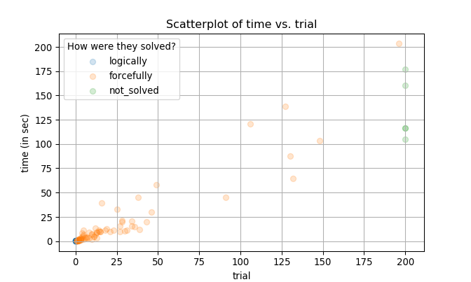

The following packages are used for analysis:
import matplotlib.pyplot as plt
import numpy as np
import pandas as pd
import random
import sudsoln as sssudsoln.Sudoku.solve() method is used to solve 95 hard questions and 11 hardest questions posted on Dr. Peter Norvig’s website.
1. Results
You can run the following script to create result_sudsoln0.1.0.csv file, and then this script to produce tables used in analysis. Codes that produced plots in section 2.3 are written here.
times are in seconds:
## is_solved total min_time median_time avg_time max_time
## category
## top95 92 95 0.191515 3.739001 18.551033 203.363059
## hardest 9 11 0.048868 1.840078 28.375194 176.589680
## all 101 106 0.048868 3.616845 19.570521 203.363059Note that:
- 101 out of 106 are solved, which results in a solving rate of 95.283%. I’m hoping to achieve 100% solution rate in future updates by incorporating more logical approaches and adapting a better search algorithm.
times are extremely right-skewed in everycategory. See section 2.3. below for details.
2. Analysis
2.1. How long did it take to solve a puzzle?
times displayed in the table above show how long ss.Sudoku.solve() ran most of the time, NOT how long it took to solve a puzzle. To see how long the method ran most of the time given that it solved a puzzle, a grouping by is_solved column is required:
## total min_time median_time avg_time max_time
## category is_solved
## top95 True 92 0.191515 3.665694 15.002534 203.363059
## False 3 104.997169 116.626084 127.371666 160.491744
## hardest True 9 0.048868 0.741012 2.162101 10.310423
## False 2 116.078541 146.334111 146.334111 176.589680
## all True 101 0.048868 3.557485 13.858337 203.363059
## False 5 104.997169 116.626084 134.956644 176.589680In terms of times consumed, it is hard to say there is a difference in terms of difficulty between puzzles in top95 category and hardest category. One reason for this is because there are only 11 puzzles in hardest. It is true that every solved puzzles in hardest category are solved in 10.31 seconds, which is less than the average time (15.003 seconds) consumed by solved puzzles in top95 category, and one might say puzzles in hardest are actually easier than top95 counterparts. However, top95 has 95 puzzles which makes it more prone to having outliers. hardest doesn’t have enough puzzles to comment about their nature. Also, the mean time consumed to solve hardest puzzles is 2.162 seconds, which is close to 3.666 seconds, the median time consumed by solved puzzles of top95 category. This implies that solved puzzles in hardest and top95 are quite similar in nature.
2.2. How many puzzles required a brute force to be solved?
## total min_time median_time avg_time max_time
## solved
## logically 18 0.048868 0.415899 0.356829 0.631310
## forcefully 83 0.370045 5.146216 16.786375 203.363059
## not_solved 5 104.997169 116.626084 134.956644 176.589680Out of 101 solved puzzles, 18 puzzles (17.822%) were solved by logical approaches only, and 83 puzzles (82.178%) required a brute force.
It is not surprising to see that puzzles were solved significantly faster when they were solely solved by logical approaches. This is quite obvious because ss.Sudoku.solve() first uses ss.Sudoku.solve_logically() and then ss.Sudoku.solve_forcefully() if logical approaches aren’t enough. That is, every forcefully solved puzzle first went through ss.Sudoku.solve_logically() and then ss.Sudoku.solve_forcefully().
Interestingly, the minimum time consumed by one of forcefully solved puzzles (0.37 seconds) is smaller than the maximum time consumed by one of logically solved puzzles (0.631 seconds), implying that there is a case where a forceful solving mechanism was actually faster than a logical reasoning. One explanation is that those puzzles become solvable by logic after plugging in one candidate value to an entry. A puzzle of this type makes ss.Sudoku.solve_logically() to return a fairly small ss.candidate.Candidate, so a single selection of candidate value in ss.Sudoku.solve_forcefully() immediately leads to the answer form (or one of possibly many answer forms).
## category time trial is_solved
## 7 top95 0.565487 1 True
## 10 top95 0.589420 1 True
## 17 top95 0.426835 1 True
## 26 top95 0.589407 1 True
## 31 top95 0.370045 1 True
## 38 top95 0.484700 1 True
## 40 top95 0.546531 1 True
## 42 top95 0.505638 2 True
## 51 top95 0.501645 1 True
## 63 top95 0.468709 1 TrueThe following table lists forcefully solved puzzles that took less than 0.631 seconds, the maximum time consumed by one of logically solved puzzles. Notice that trials are either 1 or 2, indicating that after plugging in one or two values to the puzzle’s entries, applying ss.Sudoku.solve_logically() inside ss.Sudoku.solve_logically() led to the answer.
## category time trial is_solved
## 9 top95 1.269593 2 True
## 27 top95 0.766949 2 True
## 32 top95 1.883995 2 True
## 34 top95 0.738061 2 True
## 46 top95 0.838757 2 True
## 49 top95 0.702157 1 True
## 61 top95 1.067157 2 True
## 64 top95 1.738350 2 True
## 81 top95 1.537886 2 True
## 90 top95 0.669186 1 True
## 97 hardest 0.703121 1 True
## 104 hardest 0.741012 2 TrueThis table shows forcefully solved puzzles that took longer than any other logically solved puzzles and yet took at most two attempts. We find that:
- there are only 3 puzzles with
trial == 1in this table, i.e. puzzles that took one attempt to solve are essentially the same as logically solved puzzles in terms of times consumed (They took no longer than 0.704 seconds). We may expect them to be solved completely by logic as the version increases. - puzzles solved within two attempts are all solved within 1.884 seconds.
2.3. How many attempts did it take to solve a puzzle if forcefully solved?
## total min_trial median_trial avg_trial max_trial
## solved
## forcefully 83 1 8 22.192771 196(total in the table is the number of cases out of 106 puzzles.)
The most apparent pattern is that both time and trial are extremely right-skewed regardless of the group. This shows that there is no “middle ground”, i.e. the package either solved a puzzle fairly quickly, or it took a very long time to solve one. Thus, the median is more reliable than the mean. According to the above table, about 8 trials are required whenever a puzzle requires a brute force to be solved.
## <matplotlib.collections.PathCollection object at 0x000001D981B961D0>
## <matplotlib.collections.PathCollection object at 0x000001D981B96080>
## <matplotlib.collections.PathCollection object at 0x000001D981B966A0>## <matplotlib.legend.Legend object at 0x000001D981B83EF0>## Text(0.5, 0, 'trial')## Text(0, 0.5, 'time (in sec)')## Text(0.5, 1.0, 'Scatterplot of time vs. trial')
The scatterplot of time vs. trial shows that the vast majority of puzzles are solved within 50 trials or about a minute. That is, setting a big max_trial in ss.Sudoku.solve() (which leads to a longer running time) will increase a chance of a puzzle getting solved, but not by a large scale after max_trial gets greater than 50.
This plot displays how the expected probability of a puzzle getting solved increases as max_trial argument specified in ss.Sudoku.solve() gets bigger. Notice the plateau starts after 50 max_trial, and stays around the probability of 90%.
To get the idea of how much more time is required as trial increases, I fit a linear regression model between log-transformed time and trial. In particular, the following model is used: \[\log(\text{time}) = \beta_0 + \beta_1 \log(\text{trial} + 1) + \varepsilon\] Log-transformations are performed due to a severe right-skewness on both the response and the feature; trial + 1 is used because whenever \(\text{trial} = 0\), \(\log(\text{trial})\) is undefined, and \(\log(\text{trial} + 1)\) becomes exactly \(0\). Model-checking procedure is skipped, and the model is assumed to be appropriate to describe the relationship between the two.
## <matplotlib.collections.PathCollection object at 0x000001D981E859B0>
## <matplotlib.collections.PathCollection object at 0x000001D981E85EF0>
## <matplotlib.collections.PathCollection object at 0x000001D981E79320>## <matplotlib.legend.Legend object at 0x000001D981BC1828>## [<matplotlib.lines.Line2D object at 0x000001D981E79F60>]## Text(0.5, 0, 'log(trial + 1)')## Text(0, 0.5, 'log(time)')## Text(0.5, 1.0, 'Scatterplot of log(time) vs. log(trial + 1)')## <matplotlib.collections.PathCollection object at 0x000001D982005C88>
## <matplotlib.collections.PathCollection object at 0x000001D981BD20F0>
## <matplotlib.collections.PathCollection object at 0x000001D981BD2400>## <matplotlib.legend.Legend object at 0x000001D982005A58>## Text(0.5, 0, 'trial')## Text(0, 0.5, 'time (in sec)')## Text(0.5, 1.0, 'Scatterplot of time vs. trial with a regression line')## [<matplotlib.lines.Line2D object at 0x000001D981FDB588>]According to the model:
- around 20% of sudoku puzzles with a
top95orhardestdifficulty are expected to be solved byss.Sudoku.solve_logically()in about 0.326 seconds - around 90% of sudoku puzzles with a
top95orhardestdifficulty are expected to be solved byss.Sudoku.solve()in about 50 attempts (trials), or 33.483 seconds ss.Sudoku.solve()is expected to terminate in about 168.522 seconds, regardless of whether the method solves a puzzle or not, if used the default setting ofmax_trial = 200
Session info
## -----
## matplotlib 3.1.1
## numpy 1.17.0
## pandas 0.25.0
## scipy 1.1.0
## sudsoln 0.1.0
## -----
## Python 3.7.2 (tags/v3.7.2:9a3ffc0492, Dec 23 2018, 23:09:28) [MSC v.1916 64 bit (AMD64)]
## Windows-10-10.0.18362-SP0
## 4 logical CPU cores, Intel64 Family 6 Model 78 Stepping 3, GenuineIntel
## -----
## Session information updated at 2019-11-01 02:16